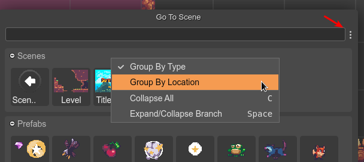

Create a new Scene file
These are the steps to create a new scene file:
Open the New File dialog.
Select the Scene File option. This opens the New Scene File dialog.
In the new dialog, select the location of the new file.
Write the name of the scene file. The
.sceneextension is added automatically, if not set.Press the Create button. The file will be created and opened in the Scene Editor.
Settings
When a new scene is created, it will use the default settings. However, if there are other scene files, some general settings will be taken from the latest modified scene. This allows to keep the same general settings for all the scenes of your project. In the future, we should implement a better way to set general project settings.
These are the settings that are copied when creating a new scene file:
borderX
borderY
borderWidth
borderHeight
compilerOutputLanguage
compilerInsertSpaces
compilerTabSize
Opening a scene file
All files are shown in the Files view, including the scenes. However, you can open the Go To File dialog (Ctrl+P), or even better, the Go To Scene dialog (Ctrl+Alt+O):
You can group the scene files by type (prefab or scene) or by location. Open the context menu for selecting the grouping criteria:
